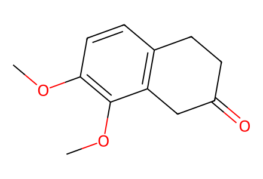
COc1ccc2c(c1OC)CC(=O)CC2Main total synthesis and all available SI preparative alternatives/byproducts, including source-drawn unisolated intermediates. Racemic series; relative configurations encoded only when unambiguous source wedges permit. Facts compiled deterministically; independent review pending.
完整 JSON · 逐步 CSV · 路线序列 · SDF · HRMS 核对
| 事件 | 分子连接 | 报告产率 | Canonical reaction SMILES |
|---|---|---|---|
| E01 | S1 → S2 | not reported | COc1cccc(CC(=O)O)c1OC>>COc1cccc(CC(=O)Cl)c1OC |
| E02 | S2 + ethylene → S3 | S3: 51% | C=C.COc1cccc(CC(=O)Cl)c1OC>>COc1ccc2c(c1OC)CC(=O)CC2 |
| E03 | S3 + pyrrolidine → S4 | not reported | C1CCNC1.COc1ccc2c(c1OC)CC(=O)CC2>>COc1ccc2c(c1OC)C=C(N1CCCC1)CC2 |
| E04 | S4 + bromoacetonitrile → 6 | 6: 59% | COc1ccc2c(c1OC)C=C(N1CCCC1)CC2.N#CCBr>>COc1ccc2c(c1OC)C(CC#N)C(=O)CC2 |
| E05 | S5 → S6 | not reported | [Br-].c1ccc([P+](c2ccccc2)(c2ccccc2)C2CC2)cc1>>[Br-].[Li+].c1ccc([P+](c2ccccc2)(c2ccccc2)[C-]2CC2)cc1 |
| E06 | S6 + ethyl-chloroformate → 7 | 7: 69% | CCOC(=O)Cl.[Br-].[Li+].c1ccc([P+](c2ccccc2)(c2ccccc2)[C-]2CC2)cc1>>CCOC(=O)C1([P+](c2ccccc2)(c2ccccc2)c2ccccc2)CC1.[Br-].[Cl-].[Li+] |
| E07 | 6 + 7 → 8 | 8: 63% | CCOC(=O)C1([P+](c2ccccc2)(c2ccccc2)c2ccccc2)CC1.COc1ccc2c(c1OC)C(CC#N)C(=O)CC2.[Br-].[Cl-].[Li+]>>CCOC(=O)C1=C2CCc3ccc(OC)c(OC)c3C2(CC#N)CC1 |
| E08 | 8 → 2 + S7 | 2: 88% | CCOC(=O)C1=C2CCc3ccc(OC)c(OC)c3C2(CC#N)CC1>>COc1ccc2c(c1OC)C1(CC#N)CCC(CO)=C1CC2.COc1ccc2c(c1OC)C1(CCN)CCC(CO)=C1CC2 |
| E09 | 2 → 9 | 9: 100% | COc1ccc2c(c1OC)C1(CCN)CCC(CO)=C1CC2>>COc1ccc2c(c1OC)C1(CC[NH3+])CCC(COS(=O)(=O)O)=C1CC2.[Cl-] |
| E10 | 9 → 5 | 5: 91% | COc1ccc2c(c1OC)C1(CC[NH3+])CCC(COS(=O)(=O)O)=C1CC2.[Cl-]>>C=C1CC[C@]23CCN[C@]12CCc1ccc(OC)c(OC)c13 |
| E11 | 5 → 10 | 10: 63% | C=C1CC[C@]23CCN[C@]12CCc1ccc(OC)c(OC)c13>>C=C1CC[C@]23CCN(C(=O)C(F)(F)F)[C@]12CCc1ccc(OC)c(OC)c13 |
| E12 | 10 → 11 | 11: 85% | C=C1CC[C@]23CCN(C(=O)C(F)(F)F)[C@]12CCc1ccc(OC)c(OC)c13>>COc1ccc2c(c1OC)[C@]13CCC(=O)[C@@]1(CC2)N(C(=O)C(F)(F)F)CC3 |
| E13 | 10 → S8 | not reported | C=C1CC[C@]23CCN(C(=O)C(F)(F)F)[C@]12CCc1ccc(OC)c(OC)c13>>COC(=O)C=CC1=C(C(=O)OC)[C@]23CCC(=O)[C@@]2(CC1)N(C(=O)C(F)(F)F)CC3 |
| E14 | 11 → S9 | not reported | COc1ccc2c(c1OC)[C@]13CCC(=O)[C@@]1(CC2)N(C(=O)C(F)(F)F)CC3>>COc1ccc2c(c1OC)[C@@]13CCN[C@]1(CC2)C(=O)CC3 |
| E15 | S9 → S10 | S10: 99% | COc1ccc2c(c1OC)[C@@]13CCN[C@]1(CC2)C(=O)CC3>>COc1ccc2c(c1OC)[C@@]13CCN[C@]1(CC2)C(N)(C#N)CC3 |
| E16 | 10 → S11 | S11: 51% | C=C1CC[C@]23CCN(C(=O)C(F)(F)F)[C@]12CCc1ccc(OC)c(OC)c13>>C=C1CC[C@]23CCN(C(=O)C(F)(F)F)[C@]12CC(=O)c1ccc(OC)c(OC)c13 |
| E17 | S11 → 13 | 13: 47% | C=C1CC[C@]23CCN(C(=O)C(F)(F)F)[C@]12CC(=O)c1ccc(OC)c(OC)c13>>COc1ccc2c(c1OC)[C@]13CCC(=O)[C@@]1(CC2=O)N(C(=O)C(F)(F)F)CC3 |
| E18 | 11 → 13 | 13: 68% | COc1ccc2c(c1OC)[C@]13CCC(=O)[C@@]1(CC2)N(C(=O)C(F)(F)F)CC3>>COc1ccc2c(c1OC)[C@]13CCC(=O)[C@@]1(CC2=O)N(C(=O)C(F)(F)F)CC3 |
| E19 | 11 → 13 + 12 | 13: 62%; 12: 24% | COc1ccc2c(c1OC)[C@]13CCC(=O)[C@@]1(CC2)N(C(=O)C(F)(F)F)CC3>>COc1ccc2c(c1OC)[C@@]13CCN(C(=O)C(F)(F)F)[C@@]14CC2OOC4(O)CC3.COc1ccc2c(c1OC)[C@]13CCC(=O)[C@@]1(CC2=O)N(C(=O)C(F)(F)F)CC3 |
| E20 | 12 → 13 | 13: 63% | COc1ccc2c(c1OC)[C@@]13CCN(C(=O)C(F)(F)F)[C@@]14CC2OOC4(O)CC3>>COc1ccc2c(c1OC)[C@]13CCC(=O)[C@@]1(CC2=O)N(C(=O)C(F)(F)F)CC3 |
| E21 | 13 → 14 | 14: 81% | COc1ccc2c(c1OC)[C@]13CCC(=O)[C@@]1(CC2=O)N(C(=O)C(F)(F)F)CC3>>COc1ccc2c(c1OC)[C@]13CCC(=O)[C@@]1(C=C2O[Si](C)(C)C(C)(C)C)N(C(=O)C(F)(F)F)CC3 |
| E22 | 13 → S12 | not reported | COc1ccc2c(c1OC)[C@]13CCC(=O)[C@@]1(CC2=O)N(C(=O)C(F)(F)F)CC3>>COc1ccc2c(c1OC)[C@]13CC=C(O[Si](C)(C)C(C)(C)C)[C@@]1(C=C2O[Si](C)(C)C(C)(C)C)N(C(=O)C(F)(F)F)CC3 |
| E23 | 14 → S13 | S13: 100% | COc1ccc2c(c1OC)[C@]13CCC(=O)[C@@]1(C=C2O[Si](C)(C)C(C)(C)C)N(C(=O)C(F)(F)F)CC3>>COc1ccc2c(c1OC)[C@@]13CCN[C@]1(C=C2O[Si](C)(C)C(C)(C)C)C(N)(C#N)CC3 |
| E24 | S13 → 15 | 15: 91% | COc1ccc2c(c1OC)[C@@]13CCN[C@]1(C=C2O[Si](C)(C)C(C)(C)C)C(N)(C#N)CC3>>COc1ccc2c(c1OC)[C@@]13CCN[C@]1(CC2=O)C(N)(C#N)CC3 |
| E25 | 14 → 15 | 15: 100% | COc1ccc2c(c1OC)[C@]13CCC(=O)[C@@]1(C=C2O[Si](C)(C)C(C)(C)C)N(C(=O)C(F)(F)F)CC3>>COc1ccc2c(c1OC)[C@@]13CCN[C@]1(CC2=O)C(N)(C#N)CC3 |
| E26 | 15 → 16 | 16: 83% | COc1ccc2c(c1OC)[C@@]13CCN[C@]1(CC2=O)C(N)(C#N)CC3>>COc1ccc2c(c1OC)[C@@]13CCN(C)[C@]1(CC2=O)C(N)(C#N)CC3 |
| E27 | 16 → S14 + 17 | 80% combined mixture yield | COc1ccc2c(c1OC)[C@@]13CCN(C)[C@]1(CC2=O)C(N)(C#N)CC3>>COc1ccc2c(c1OC)[C@@]13CCN(C)[C@]1(C[C@@H]2O)C(N)(C#N)CC3.COc1ccc2c(c1OC)[C@@]13CCN(C)[C@]1(C[C@H]2O)C(N)(C#N)CC3 |
| E28 | 16 → 17 | 17: 97% | COc1ccc2c(c1OC)[C@@]13CCN(C)[C@]1(CC2=O)C(N)(C#N)CC3>>COc1ccc2c(c1OC)[C@@]13CCN(C)[C@]1(C[C@@H]2O)C(N)(C#N)CC3 |
| E29 | 17 → S15 | S15: 92% | COc1ccc2c(c1OC)[C@@]13CCN(C)[C@]1(C[C@@H]2O)C(N)(C#N)CC3>>COc1ccc2c(c1OC)[C@@]13CCN(C)[C@]1(C[C@@H]2O)C(C#N)(N=[N+]=[N-])CC3 |
| E30 | S15 → 18 | 18: 82% | COc1ccc2c(c1OC)[C@@]13CCN(C)[C@]1(C[C@@H]2O)C(C#N)(N=[N+]=[N-])CC3>>COc1ccc2c(c1OC)[C@@]13CCN(C)[C@@]14C[C@@H]2OC(=N)C4(N=[N+]=[N-])CC3 |
| E31 | 18 → S16 | S16: 94% | COc1ccc2c(c1OC)[C@@]13CCN(C)[C@@]14C[C@@H]2OC(=N)C4(N=[N+]=[N-])CC3>>COc1ccc2c(c1OC)[C@@]13CCN(C)[C@@]14C[C@@H]2OC(=O)C4(N=[N+]=[N-])CC3 |
| E32 | S16 → stephadiamine | stephadiamine: 56% | COc1ccc2c(c1OC)[C@@]13CCN(C)[C@@]14C[C@@H]2OC(=O)C4(N=[N+]=[N-])CC3>>COc1ccc2c(c1OC)[C@@]13CCN(C)[C@@]14C[C@@H]2OC(=O)C4(N)CC3 |
| E33 | 17 → 18 | 18: 90% | COc1ccc2c(c1OC)[C@@]13CCN(C)[C@]1(C[C@@H]2O)C(N)(C#N)CC3>>COc1ccc2c(c1OC)[C@@]13CCN(C)[C@@]14C[C@@H]2OC(=N)C4(N=[N+]=[N-])CC3 |
| E34 | 18 → stephadiamine | stephadiamine: 65% | COc1ccc2c(c1OC)[C@@]13CCN(C)[C@@]14C[C@@H]2OC(=N)C4(N=[N+]=[N-])CC3>>COc1ccc2c(c1OC)[C@@]13CCN(C)[C@@]14C[C@@H]2OC(=O)C4(N)CC3 |
| E35 | 15 → 17 | 17: 87% | COc1ccc2c(c1OC)[C@@]13CCN[C@]1(CC2=O)C(N)(C#N)CC3>>COc1ccc2c(c1OC)[C@@]13CCN(C)[C@]1(C[C@@H]2O)C(N)(C#N)CC3 |

COc1ccc2c(c1OC)CC(=O)CC2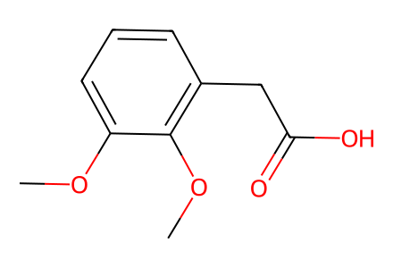
COc1cccc(CC(=O)O)c1OC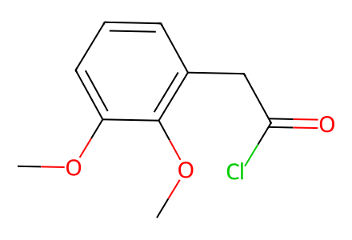
COc1cccc(CC(=O)Cl)c1OC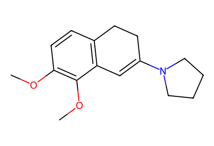
COc1ccc2c(c1OC)C=C(N1CCCC1)CC2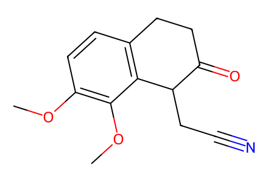
COc1ccc2c(c1OC)C(CC#N)C(=O)CC2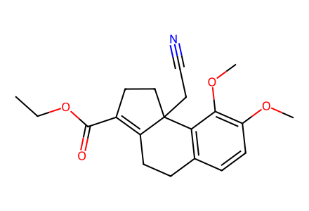
CCOC(=O)C1=C2CCc3ccc(OC)c(OC)c3C2(CC#N)CC1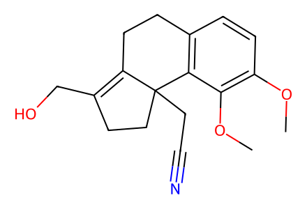
COc1ccc2c(c1OC)C1(CC#N)CCC(CO)=C1CC2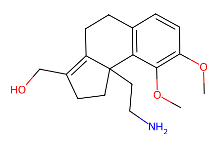
COc1ccc2c(c1OC)C1(CCN)CCC(CO)=C1CC2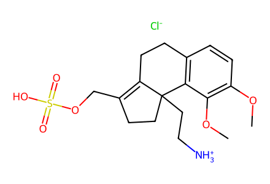
COc1ccc2c(c1OC)C1(CC[NH3+])CCC(COS(=O)(=O)O)=C1CC2.[Cl-]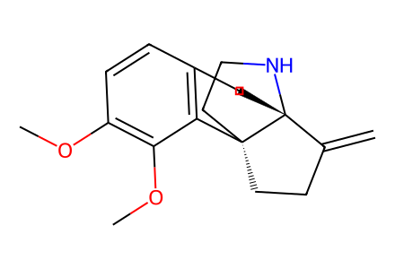
C=C1CC[C@]23CCN[C@]12CCc1ccc(OC)c(OC)c13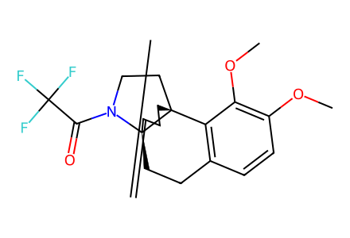
C=C1CC[C@]23CCN(C(=O)C(F)(F)F)[C@]12CCc1ccc(OC)c(OC)c13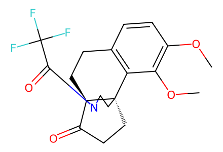
COc1ccc2c(c1OC)[C@]13CCC(=O)[C@@]1(CC2)N(C(=O)C(F)(F)F)CC3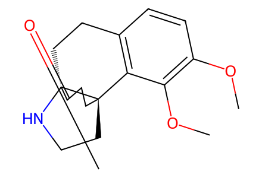
COc1ccc2c(c1OC)[C@@]13CCN[C@]1(CC2)C(=O)CC3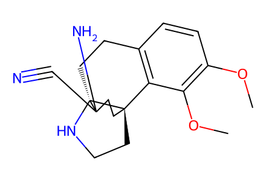
COc1ccc2c(c1OC)[C@@]13CCN[C@]1(CC2)C(N)(C#N)CC3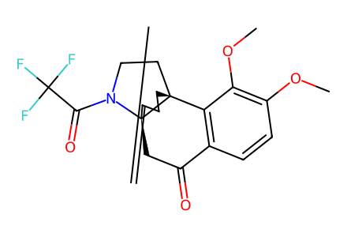
C=C1CC[C@]23CCN(C(=O)C(F)(F)F)[C@]12CC(=O)c1ccc(OC)c(OC)c13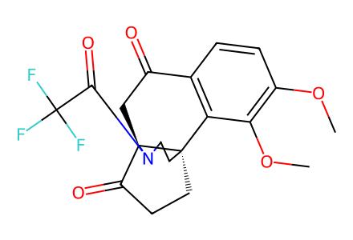
COc1ccc2c(c1OC)[C@]13CCC(=O)[C@@]1(CC2=O)N(C(=O)C(F)(F)F)CC3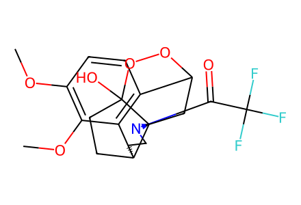
COc1ccc2c(c1OC)[C@@]13CCN(C(=O)C(F)(F)F)[C@@]14CC2OOC4(O)CC3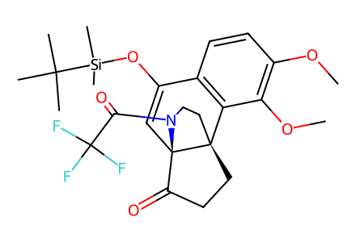
COc1ccc2c(c1OC)[C@]13CCC(=O)[C@@]1(C=C2O[Si](C)(C)C(C)(C)C)N(C(=O)C(F)(F)F)CC3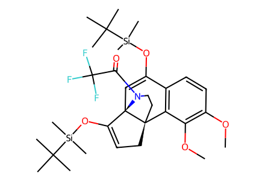
COc1ccc2c(c1OC)[C@]13CC=C(O[Si](C)(C)C(C)(C)C)[C@@]1(C=C2O[Si](C)(C)C(C)(C)C)N(C(=O)C(F)(F)F)CC3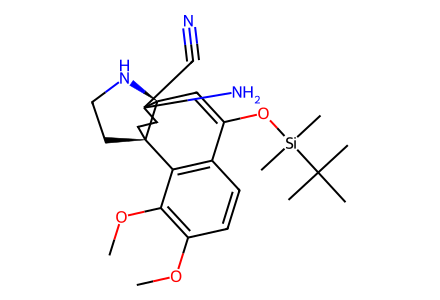
COc1ccc2c(c1OC)[C@@]13CCN[C@]1(C=C2O[Si](C)(C)C(C)(C)C)C(N)(C#N)CC3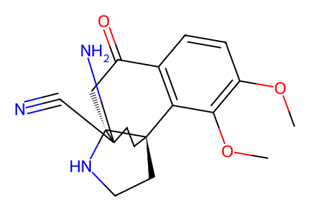
COc1ccc2c(c1OC)[C@@]13CCN[C@]1(CC2=O)C(N)(C#N)CC3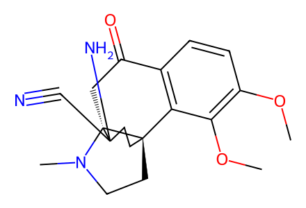
COc1ccc2c(c1OC)[C@@]13CCN(C)[C@]1(CC2=O)C(N)(C#N)CC3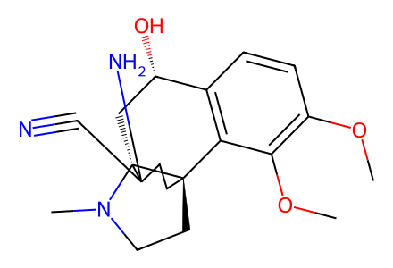
COc1ccc2c(c1OC)[C@@]13CCN(C)[C@]1(C[C@@H]2O)C(N)(C#N)CC3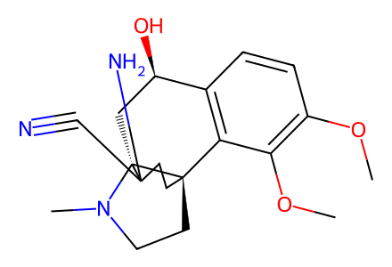
COc1ccc2c(c1OC)[C@@]13CCN(C)[C@]1(C[C@H]2O)C(N)(C#N)CC3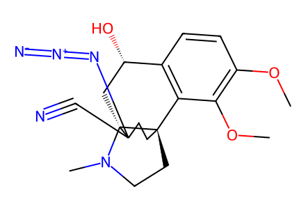
COc1ccc2c(c1OC)[C@@]13CCN(C)[C@]1(C[C@@H]2O)C(C#N)(N=[N+]=[N-])CC3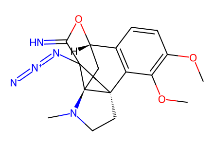
COc1ccc2c(c1OC)[C@@]13CCN(C)[C@@]14C[C@@H]2OC(=N)C4(N=[N+]=[N-])CC3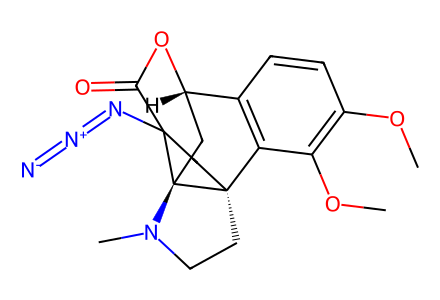
COc1ccc2c(c1OC)[C@@]13CCN(C)[C@@]14C[C@@H]2OC(=O)C4(N=[N+]=[N-])CC3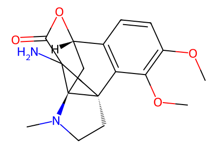
COc1ccc2c(c1OC)[C@@]13CCN(C)[C@@]14C[C@@H]2OC(=O)C4(N)CC3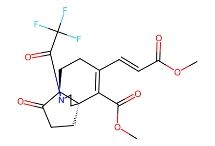
COC(=O)C=CC1=C(C(=O)OC)[C@]23CCC(=O)[C@@]2(CC1)N(C(=O)C(F)(F)F)CC3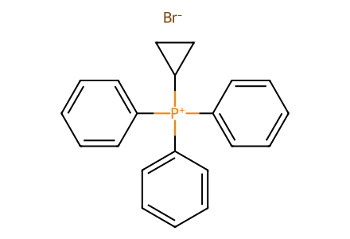
[Br-].c1ccc([P+](c2ccccc2)(c2ccccc2)C2CC2)cc1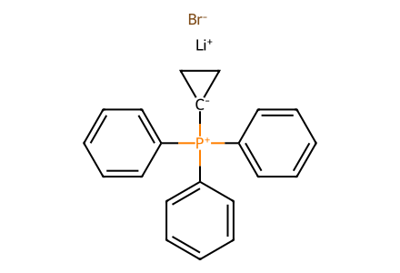
[Br-].[Li+].c1ccc([P+](c2ccccc2)(c2ccccc2)[C-]2CC2)cc1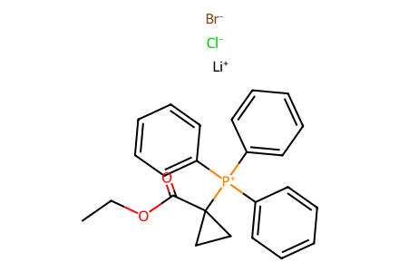
CCOC(=O)C1([P+](c2ccccc2)(c2ccccc2)c2ccccc2)CC1.[Br-].[Cl-].[Li+]
C=C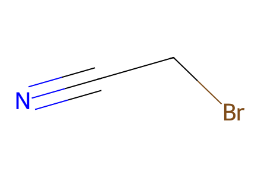
N#CCBr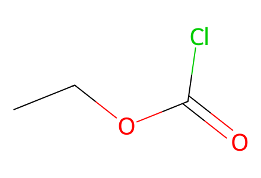
CCOC(=O)Cl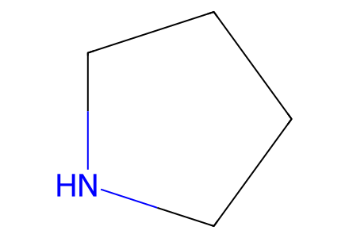
C1CCNC1